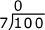

Long Division Calculator
Division is one of the basic arithmetic operations, the others being multiplication (the inverse of division), addition, and subtraction. The arithmetic operations are ways that numbers can be combined in order to make new numbers. Division can be thought of as the number of times a given number goes into another number. For example, 2 goes into 8 4 times, so 8 divided by 4 equals 2.
Division can be denoted in a few different ways. Using the example above:
8 ÷ 4 = 2
8/4 = 2
| = 2 |
In order to more effectively discuss division, it is important to understand the different parts of a division problem.
Components of division
Generally, a division problem has three main parts: the dividend, divisor, and quotient. The number being divided is the dividend, the number that divides the dividend is the divisor, and the quotient is the result:
One way to think of the dividend is that it is the total number of objects available. The divisor is the desired number of groups of objects, and the quotient is the number of objects within each group. Thus, assuming that there are 8 people and the intent is to divide them into 4 groups, division indicates that each group would consist of 2 people. In this case, the number of people can be divided evenly between each group, but this is not always the case. There are two ways to divide numbers when the result won't be even. One way is to divide with a remainder, meaning that the division problem is carried out such that the quotient is an integer, and the leftover number is a remainder. For example, 9 cannot be evenly divided by 4. Instead, knowing that 8 ÷ 4 = 2, this can be used to determine that 9 ÷ 4 = 2 R1. In other words, 9 divided by 4 equals 2, with a remainder of 1. Long division can be used either to find a quotient with a remainder, or to find an exact decimal value.

How to perform long division?
To perform long division, first identify the dividend and divisor. To divide 100 by 7, where 100 is the dividend and 7 is the divisor, set up the long division problem by writing the dividend under a radicand, with the divisor to the left (divisorvdividend), then use the steps described below:

- Starting from left to right, divide the first digit in the dividend by the divisor. If the first digit cannot be divided by the divisor, write a 0 above the first digit of the divisor. 7 cannot be divided into 1, so:
- Continue the problem by dividing the divisor into the number formed by the combination of the previous and subsequent digit of the dividend. In this case, the next number formed is 10, which 7 can be divided into once, so write a 1 above the 2nd digit of the dividend, and a 7 below.

- Subtract, then bring down the following digit in the original dividend to determine the new dividend.

- Determine the number of times the divisor goes into the new dividend; in this case, the number of times 7 goes into 30. Write this value above the radicand and write the product of the divisor and this value below, then subtract. 7 goes into 30 a total of 4 times, and the product of 7 and 4 is 28.

This is the stopping point if the goal is to find a quotient with a remainder. In this case, the quotient is 014 or 14, and the remainder is 2. Thus, the solution to the division problem is:
100 ÷ 7 = 14 R2
To continue the long division problem to find an exact value, continue the same process above, adding a decimal point after the quotient, and adding 0s to form new dividends until an exact solution is found, or until the quotient to a desired number of decimal places is determined.
- Add a decimal point after the quotient and a 0 to the new dividend, and continue the same process as above.

- Continue this process to the desired number of decimal places. In some cases, long division will reveal that a problem has a solution that is a repeating decimal. In other cases, the problem may result in a terminating decimal or a non-terminating decimal. 100 ÷ 7 results in a non-terminating decimal eventually, or it can closely be estimated by the mixed number
14 2 7 = 14.285714285714.